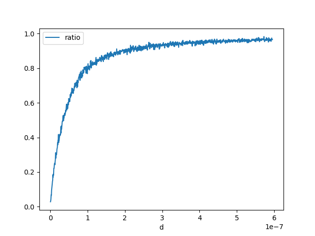

Note
Go to the end to download the full example code
Float Conversion#
I came up with the following question ? What is the probability this holds?
Probability (float64)x == (float32)x#
Let’s evaluate how many time we draw a random double number equal to its float conversion.
import random
import numpy
import pandas
import matplotlib.pyplot as plt
rnd = numpy.random.random(100000000)
rnd.shape, rnd.dtype
((100000000,), dtype('float64'))
rnd32 = rnd.astype(numpy.float32).astype(numpy.float64)
equal = (rnd == rnd32).sum()
equal
6
It is very low. Let’s check the reverse is true.
rnd32b = rnd32.astype(numpy.float64).astype(numpy.float32)
equal = (rnd32b == rnd32).sum()
equal
100000000
Let’s study the distribution of the difference.
(-2.9802321277472288e-08, 2.9802321610539195e-08)
(1.2304242402727539e-08, 0.9999999918788068)
(array([ 50077., 49673., 50187., 49916., 50119., 49943., 49836.,
50147., 49716., 50214., 49857., 49756., 50317., 50188.,
49884., 50337., 49914., 49961., 50003., 49750., 50056.,
50276., 50176., 50001., 50075., 49999., 49868., 50352.,
49880., 49879., 49707., 49856., 49850., 50124., 50088.,
49963., 50278., 49836., 50195., 50313., 49883., 50393.,
50107., 49871., 50029., 50116., 49668., 49390., 50110.,
50510., 50005., 50071., 50207., 50116., 49963., 49951.,
49666., 50059., 50284., 50581., 50324., 50133., 49731.,
50013., 50120., 49878., 50205., 49682., 49720., 50260.,
49902., 50291., 49978., 49856., 50098., 49977., 49735.,
50110., 50371., 49706., 50101., 49782., 50027., 50455.,
50283., 50003., 50117., 50095., 49785., 49532., 49965.,
50150., 49705., 49868., 50134., 50092., 49994., 49868.,
50246., 50165., 50243., 50456., 50405., 49801., 49937.,
49839., 50065., 50001., 49929., 49875., 49554., 50065.,
50208., 49942., 49915., 49765., 49990., 49886., 49698.,
50115., 50015., 49656., 49861., 50184., 49610., 49774.,
50196., 49606., 50354., 49826., 50027., 50305., 49797.,
49731., 49829., 50180., 49605., 49947., 50237., 50040.,
49947., 49862., 49896., 49676., 50110., 50040., 50158.,
50451., 49817., 49940., 49980., 49909., 50322., 49885.,
49954., 50279., 50076., 49918., 50094., 49940., 50077.,
49985., 49616., 50253., 50095., 50015., 50026., 50173.,
49729., 50124., 49816., 50011., 49781., 49542., 50117.,
49944., 49824., 50180., 50195., 49991., 49671., 49893.,
50261., 49810., 49684., 49898., 49881., 49861., 50146.,
50120., 49875., 50035., 50017., 49815., 49796., 50124.,
49803., 50343., 49845., 49870., 50048., 49537., 49443.,
50290., 49973., 50222., 49920., 50019., 49520., 50128.,
50303., 50124., 49705., 49899., 50087., 49928., 49908.,
49974., 49683., 49607., 49833., 49727., 50086., 49647.,
50009., 49982., 49764., 49853., 49990., 49975., 50085.,
49917., 50392., 50430., 50194., 49816., 50139., 50000.,
50051., 50281., 49817., 49695., 50008., 49881., 49779.,
50193., 50110., 50025., 50262., 50060., 99791., 100138.,
100114., 100440., 99760., 99533., 99561., 99705., 100612.,
101023., 99740., 99732., 99813., 100107., 99312., 99914.,
99675., 99818., 100257., 99272., 99995., 100108., 99882.,
100011., 100019., 100057., 100318., 100091., 100406., 99651.,
100288., 100210., 99667., 100114., 99610., 100134., 100173.,
100154., 99679., 100174., 100132., 100280., 99921., 99978.,
100285., 100330., 100285., 100305., 99718., 99993., 100090.,
100699., 99807., 99671., 99778., 100051., 100133., 100396.,
100175., 100528., 100127., 99834., 100399., 99761., 99723.,
99630., 100468., 100558., 99861., 100125., 99563., 100512.,
99672., 99918., 100109., 100091., 100470., 100017., 100303.,
99945., 100050., 99742., 100425., 100440., 100139., 100316.,
100567., 100032., 100038., 99976., 100114., 99737., 100050.,
99832., 99673., 100146., 100109., 100107., 99823., 100007.,
99730., 99669., 100643., 99795., 100245., 100091., 100376.,
99755., 99951., 100040., 99709., 99914., 99518., 99937.,
99866., 99785., 99708., 100188., 100093., 99800., 100607.,
100634., 100610., 100106., 99973., 149222., 150154., 150329.,
149474., 149686., 150695., 149865., 151164., 150298., 149818.,
150215., 150134., 150076., 149725., 150141., 149707., 150575.,
150165., 149795., 149570., 149558., 149509., 149428., 149466.,
149752., 149763., 149788., 150403., 150086., 150237., 149597.,
149687., 150483., 149517., 150119., 149779., 150002., 150259.,
149913., 149566., 150476., 149517., 150475., 150202., 150538.,
150771., 149821., 149913., 150168., 149821., 149898., 150138.,
149497., 149852., 150582., 149877., 149809., 150277., 150024.,
150015., 150222., 150461., 174520., 199630., 199485., 200140.,
199974., 199099., 199289., 199865., 199854., 200503., 199933.,
200187., 199843., 199875., 199632., 199884., 199800., 199579.,
199917., 200073., 200262., 199977., 199727., 199756., 200377.,
199806., 199856., 200697., 199351., 200377., 200607., 213103.,
250057., 250601., 250450., 249030., 250785., 249899., 249132.,
249616., 249114., 249801., 249928., 249345., 250513., 249609.,
249553., 281355., 299911., 299924., 300999., 300193., 301001.,
300929., 300078., 341682., 349720., 349772., 350147., 394660.,
399716., 447326., 547097., 547512., 446020., 399458., 394410.,
349714., 349075., 350012., 340303., 299562., 299896., 300316.,
299800., 300304., 299008., 300341., 280108., 249591., 250242.,
250026., 250164., 250006., 249900., 250059., 250387., 250167.,
249087., 249859., 250045., 250787., 250122., 250453., 212554.,
199326., 199145., 200346., 199946., 199366., 200081., 200597.,
199407., 201004., 199774., 200825., 198968., 200449., 199446.,
200147., 199977., 200016., 199954., 199132., 200574., 199556.,
200021., 200253., 201025., 199952., 199362., 199597., 200175.,
200526., 200445., 174765., 150470., 149691., 150604., 150063.,
149851., 150039., 150088., 150353., 150164., 149089., 149977.,
149894., 149782., 150467., 149455., 150190., 149770., 150720.,
149496., 149747., 149575., 149567., 149481., 149976., 149784.,
149914., 149800., 150246., 150252., 149473., 150297., 150839.,
149193., 149852., 149823., 150325., 150120., 149908., 150234.,
149612., 149745., 150266., 150053., 149790., 150419., 149762.,
148681., 150863., 150039., 150084., 149921., 149108., 150149.,
150047., 149938., 150201., 149589., 150358., 149900., 149766.,
149801., 149543., 100149., 100194., 100612., 99838., 99806.,
99788., 100041., 100211., 100049., 99684., 100410., 99501.,
100018., 99966., 100644., 99867., 99661., 100050., 99902.,
100108., 99645., 99807., 100185., 100006., 99985., 100213.,
100300., 100004., 99873., 100126., 99800., 100662., 99907.,
99962., 99896., 100343., 99551., 99678., 99805., 100349.,
100011., 100137., 100385., 100051., 99523., 100443., 99743.,
100301., 99740., 100392., 99320., 100144., 100192., 100272.,
100484., 100070., 100325., 100215., 99762., 100005., 100069.,
99862., 99575., 100085., 100542., 100173., 100095., 100196.,
99712., 99974., 100399., 100264., 100168., 100054., 100180.,
100272., 99981., 100272., 99822., 100161., 99860., 99972.,
100138., 99988., 100288., 100251., 100106., 99930., 100531.,
99792., 100058., 100025., 100202., 100635., 99974., 100320.,
100185., 100251., 99556., 99655., 99902., 99972., 99783.,
99856., 99861., 99740., 99795., 99617., 99889., 99755.,
100194., 100187., 100097., 99904., 99891., 100071., 100076.,
100099., 100479., 99907., 99729., 100391., 99586., 99923.,
100032., 49975., 50146., 50093., 50528., 50017., 50040.,
50096., 50183., 50306., 50297., 49852., 50435., 49970.,
50193., 49673., 49775., 50273., 50011., 50113., 50186.,
50275., 49925., 49819., 49688., 49765., 49657., 50181.,
49917., 49838., 49923., 49865., 50066., 50355., 49971.,
49669., 49863., 50300., 50048., 49883., 50187., 50199.,
50325., 49914., 49984., 49913., 49940., 50318., 49728.,
50486., 50146., 49855., 50235., 49862., 50147., 50321.,
50048., 50081., 50310., 50097., 49984., 49721., 50169.,
50314., 49895., 50026., 50388., 49930., 50003., 49794.,
49935., 49932., 50148., 50012., 50020., 49813., 49907.,
49982., 50284., 49820., 50361., 49657., 50334., 49720.,
49978., 50157., 50371., 50337., 49698., 49834., 50049.,
49944., 49588., 49934., 50227., 49874., 50232., 50051.,
49923., 49958., 50010., 50230., 50139., 49746., 50056.,
49725., 49939., 50171., 50384., 50197., 50156., 50512.,
50036., 49923., 49841., 50137., 49880., 49987., 49833.,
49788., 50326., 50135., 49887., 50169., 49822., 50148.,
50097., 50048., 49970., 49405., 49911., 49898., 50569.,
49921., 50010., 50093., 50013., 50181., 49498., 49940.,
50365., 50457., 50198., 49801., 49877., 50161., 50256.,
50001., 49823., 50145., 49897., 50165., 49965., 50006.,
50010., 50525., 50345., 50342., 50070., 49982., 50278.,
50032., 49735., 50146., 49853., 49522., 49831., 49876.,
50257., 49637., 49870., 50206., 50041., 49956., 50472.,
50085., 49343., 49887., 49895., 49855., 49856., 50273.,
50036., 49723., 49716., 50213., 49802., 50265., 50045.,
49918., 50448., 50357., 49983., 50115., 49747., 49585.,
50033., 49731., 49980., 49886., 50164., 50159., 49846.,
50194., 50062., 49888., 50214., 50185., 49906., 49737.,
50180., 49654., 50026., 50195., 50009., 49797., 50212.,
50116., 50117., 50129., 50351., 49797., 50202., 50310.,
50089., 50457., 50014., 50272., 50155., 50103., 50210.,
49783., 50102., 49974., 50002., 49919., 49678., 50195.,
49290., 49706., 50281., 50126., 49733., 50178., 50046.,
50352., 49940., 49760., 50082., 50013., 49792.]), array([-2.98023213e-08, -2.97427166e-08, -2.96831120e-08, ...,
2.96831123e-08, 2.97427170e-08, 2.98023216e-08]), <BarContainer object of 1000 artists>)
We finally check that double operations between float numpers remain floats.
for i in range(0, 100000):
i, j = random.randint(0, len(rnd32) - 1), random.randint(0, len(rnd32) - 1)
d32 = numpy.float64(rnd32[i] * rnd32[j])
d64 = numpy.float64(rnd32[i]) * numpy.float64(rnd32[j])
if d32 != d64:
raise Exception(
"Issue with somme={0} = {1} + {2}".format(
rnd32[i] + rnd32[j], rnd32[i], rnd32[j]
)
)
Interval length distribution#
Let’s imagine now we want to define an intervalle in which a double is converted to the same float. Let’s find out about it length.
def find_interval(x):
dx = numpy.abs(x - numpy.float32(x)) # usually not zero
dx /= 100
f = numpy.float32(x)
x1 = x
while numpy.float32(x1) == f:
x1 -= dx
x2 = x
while numpy.float32(x2) == f:
x2 += dx
return x1 + dx, x2 - dx
length = numpy.zeros((2000,))
for i in range(length.shape[0]):
x = rnd[i]
x1, x2 = find_interval(x)
length[i] = x2 - x1
min(length), max(length)
(2.902177131426653e-11, 5.9604642110855366e-08)
(array([ 36., 29., 0., 47., 0., 0., 126., 0., 0.,
0., 0., 0., 235., 0., 0., 0., 0., 0.,
0., 0., 0., 0., 0., 0., 519., 0., 0.,
0., 0., 0., 0., 0., 0., 0., 0., 0.,
0., 0., 0., 0., 0., 0., 0., 0., 0.,
0., 0., 0., 0., 1008.]), array([2.90217713e-11, 1.22053418e-09, 2.41204658e-09, 3.60355899e-09,
4.79507140e-09, 5.98658381e-09, 7.17809621e-09, 8.36960862e-09,
9.56112103e-09, 1.07526334e-08, 1.19441458e-08, 1.31356582e-08,
1.43271707e-08, 1.55186831e-08, 1.67101955e-08, 1.79017079e-08,
1.90932203e-08, 2.02847327e-08, 2.14762451e-08, 2.26677575e-08,
2.38592699e-08, 2.50507823e-08, 2.62422947e-08, 2.74338071e-08,
2.86253195e-08, 2.98168319e-08, 3.10083443e-08, 3.21998568e-08,
3.33913692e-08, 3.45828816e-08, 3.57743940e-08, 3.69659064e-08,
3.81574188e-08, 3.93489312e-08, 4.05404436e-08, 4.17319560e-08,
4.29234684e-08, 4.41149808e-08, 4.53064932e-08, 4.64980056e-08,
4.76895180e-08, 4.88810304e-08, 5.00725429e-08, 5.12640553e-08,
5.24555677e-08, 5.36470801e-08, 5.48385925e-08, 5.60301049e-08,
5.72216173e-08, 5.84131297e-08, 5.96046421e-08]), <BarContainer object of 50 artists>)
So we can approximate this interval by something like this:
ql = numpy.sort(length)[int(length.shape[0] * 0.8)]
ql
5.9527662799041536e-08
An answer to the initial question#
Let’s estimate ?
def inf_strict(x, y):
f1 = x < y
f2 = numpy.float32(x) < numpy.float32(y)
return f1, f2
def count_events(fct):
rows = []
for di in range(1, 1001):
d = di * ql / 100
total = 0
ok = 0
rnd = numpy.random.random((2000 * 3,))
for i in range(0, rnd.shape[0], 3):
s = -1 if rnd[i + 2] < 0.5 else 1
x, y = rnd[i], rnd[i] + rnd[i + 1] * d * s
f1, f2 = fct(x, y)
if f1:
total += 1
if f2:
ok += 1
if (di + 10) % 100 == 0:
print(di, d, ":", ok, total)
rows.append(dict(d=d, ratio=ok * 1.0 / total, total=total))
return pandas.DataFrame(rows)
df = count_events(inf_strict)
df.head()
90 5.357489651913738e-08 : 611 979
190 1.1310255931817892e-07 : 810 1000
290 1.7263022211722046e-07 : 878 996
390 2.32157884916262e-07 : 911 1003
490 2.9168554771530353e-07 : 919 978
590 3.5121321051434506e-07 : 947 996
690 4.107408733133866e-07 : 958 1013
790 4.7026853611242814e-07 : 990 1026
890 5.297961989114697e-07 : 944 980
990 5.893238617105112e-07 : 956 989

<Axes: xlabel='d'>
<Axes: xlabel='d'>
An answer to a similar question: what about not strict comparison?#
Let’s estimate ?
def inf_equal(x, y):
f1 = x <= y
f2 = numpy.float32(x) <= numpy.float32(y)
return f1, f2
df2 = count_events(inf_equal)
df2.head()
90 5.357489651913738e-08 : 1040 1040
190 1.1310255931817892e-07 : 1025 1025
290 1.7263022211722046e-07 : 1000 1000
390 2.32157884916262e-07 : 1015 1015
490 2.9168554771530353e-07 : 940 940
590 3.5121321051434506e-07 : 966 966
690 4.107408733133866e-07 : 1001 1001
790 4.7026853611242814e-07 : 983 983
890 5.297961989114697e-07 : 1024 1024
990 5.893238617105112e-07 : 985 985
<Axes: xlabel='d'>
def sup_strict(x, y):
f1 = x > y
f2 = numpy.float32(x) > numpy.float32(y)
return f1, f2
df3 = count_events(sup_strict)
df3.head()
90 5.357489651913738e-08 : 614 1004
190 1.1310255931817892e-07 : 810 995
290 1.7263022211722046e-07 : 870 989
390 2.32157884916262e-07 : 905 985
490 2.9168554771530353e-07 : 908 977
590 3.5121321051434506e-07 : 930 994
690 4.107408733133866e-07 : 954 995
790 4.7026853611242814e-07 : 947 984
890 5.297961989114697e-07 : 984 1021
990 5.893238617105112e-07 : 972 1003
<Axes: xlabel='d'>
def sup_equal(x, y):
f1 = x >= y
f2 = numpy.float32(x) >= numpy.float32(y)
return f1, f2
df4 = count_events(sup_equal)
df4.head()
90 5.357489651913738e-08 : 989 989
190 1.1310255931817892e-07 : 1011 1011
290 1.7263022211722046e-07 : 994 994
390 2.32157884916262e-07 : 982 982
490 2.9168554771530353e-07 : 981 981
590 3.5121321051434506e-07 : 1008 1008
690 4.107408733133866e-07 : 1011 1011
790 4.7026853611242814e-07 : 998 998
890 5.297961989114697e-07 : 998 998
990 5.893238617105112e-07 : 1029 1029
<Axes: xlabel='d'>
def inf_strict_neg(x, y):
f1 = (-x) >= (-y)
f2 = (-numpy.float32(x)) >= (-numpy.float32(y))
return f1, f2
dfn = count_events(inf_strict_neg)
dfn.head()
90 5.357489651913738e-08 : 991 991
190 1.1310255931817892e-07 : 966 966
290 1.7263022211722046e-07 : 975 975
390 2.32157884916262e-07 : 989 989
490 2.9168554771530353e-07 : 1010 1010
590 3.5121321051434506e-07 : 1033 1033
690 4.107408733133866e-07 : 1019 1019
790 4.7026853611242814e-07 : 999 999
890 5.297961989114697e-07 : 978 978
990 5.893238617105112e-07 : 1011 1011
<Axes: xlabel='d'>
Conclusion#
The result is expected. As soon as two float are rounded to the same value,
the strict inequality no longer holds. However, if you need to write a
code which has to handle double and float (in a template for example),
you should use not strict inequalities. It is easier to compare the results
but you should read some article like Is < faster than <=?.
According to
Processing costs of non-strict versus strict comparison, < is 5-10% faster than <=.
Total running time of the script: (0 minutes 29.500 seconds)